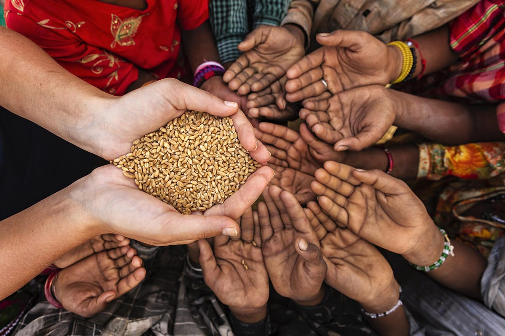

Who are we?
Get to know who zeroHunger are as a non-governmental organization in Africa.
April 4, 2024

Written in KNUST..
In today's world, with its abundance of resources and advancements in technology, the persistence of hunger is a stark reminder of the inequalities that plague our societies. The United Nations' Sustainable Development Goal 2 (SDG 2), Zero Hunger, aims to end hunger, achieve food security, improvenutrition, and promote sustainable agriculture by 2030. This ambitious goal requires a multifaceted approach addressing various aspects of food production, distribution, access, and utilization. It necessitates innovative solutions that leverage technology, community engagement, and policy interventions to ensure no one goes to bed hungry. Hunger is a complex issue with multiple underlying causes, including poverty, conflict, inequality, climate change, and inefficient food systems. According to the Food and Agriculture Organization (FAO), over 690 million people worldwide suffer from chronic hunger, with the majority residing in developing regions. Moreover, malnutrition affects billions, leading to stunted growth, micronutrient deficiencies, and other health complications. The ramifications of hunger extend beyond individual suffering, impacting economies, healthcare systems, and societal stability. Achieving Zero Hunger requires a holistic approach that addresses the root causes of food insecurity while building resilience against future challenges. Sustainable agriculture plays a pivotal role in this endeavor, as it ensures food production meets present needs without compromising the ability of future generations to meet theirs. This involves promoting agroecological practices, supporting smallholder farmers, investing in rural infrastructure, and enhancing access to markets and financial services. Furthermore, empowering communities through education and capacity-building initiatives fosters self-reliance and resilience. By equipping individuals with knowledge about nutrition, food preparation, and sustainable farming techniques, they can make informed choices that improve their well-being and food security. Additionally, initiatives aimed at women's empowerment are crucial, as women often play key roles in food production, processing, and distribution within their households and communities. In the digital age, technology serves as a powerful tool in the fight against hunger. From precision agriculture and climate-smart farming techniques to blockchain-enabled supply chains and mobile applications, innovations abound in addressing food security challenges. One such innovation is the web application 'zeroHunger,' which leverages the connectivity of the internet to facilitate food distribution, reduce food waste, and empower communities. zeroHunger is a user-friendly web application designed to connect surplus food providers with individuals and communities in need. It serves as a platform where food producers, retailers, restaurants, and individuals can donate excess food items, which are then redistributed to food banks, shelters, schools, and other organizations serving vulnerable populations. The application utilizes geolocation technology to match donors with nearby recipients, streamlining the process and reducing logistical barriers. Food Donation and Redistribution, Recipient Identification and Matching, Real-Time Updates and Notifications, Data Analytics and Insights and Community Engagement and Advocacy. The implementation of zeroHunger has the potential to yield significant positive impacts on food security, nutrition, and community well-being. By harnessing technology to streamline food redistribution processes, the application reduces food waste, addresses immediate hunger needs, and fosters solidarity within communities. Moreover, by facilitating data collection and analysis, zeroHunger empowers stakeholders to make evidence-based decisions and advocate for policy changes that address systemic inequalities. Ending hunger is not merely a moral imperative but also a prerequisite for achieving sustainable development and ensuring a more equitable world for all. The Sustainable Development Goal 2, Zero Hunger, provides a framework for concerted action towards this ambitious objective. By embracing innovative solutions like the zeroHunger web application, we can leverage the power of technology, community engagement, and data-driven insights to accelerate progress towards a world where no one suffers from hunger. Together, we can build a future where food security is a reality for every individual, regardless of their circumstances.
About the author

Theophilus Osei Acheampong, Computer Science 4, Department of Computer Science, College of Science, Kwame Nkrumah University of Science and Technology.
Popular Post
